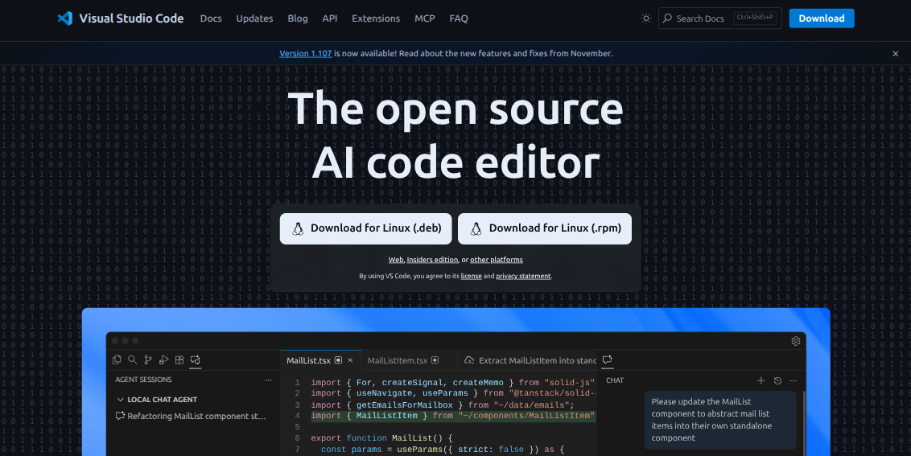
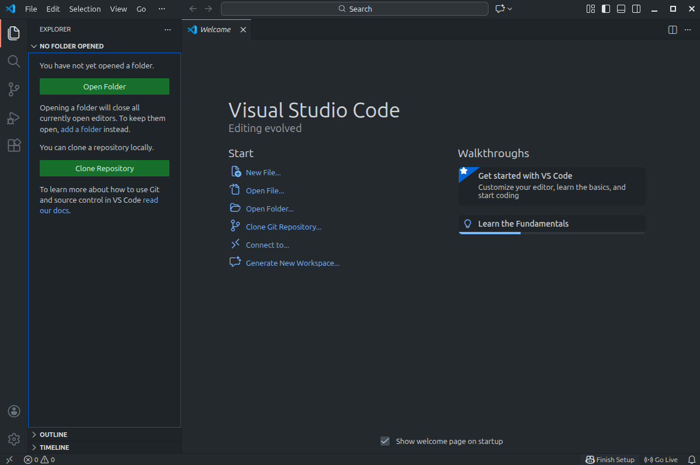
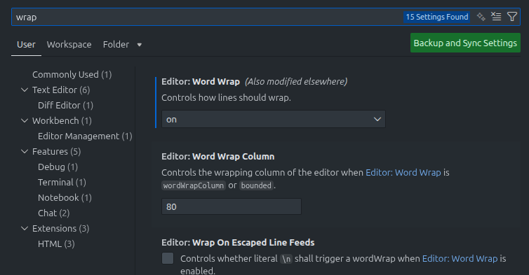
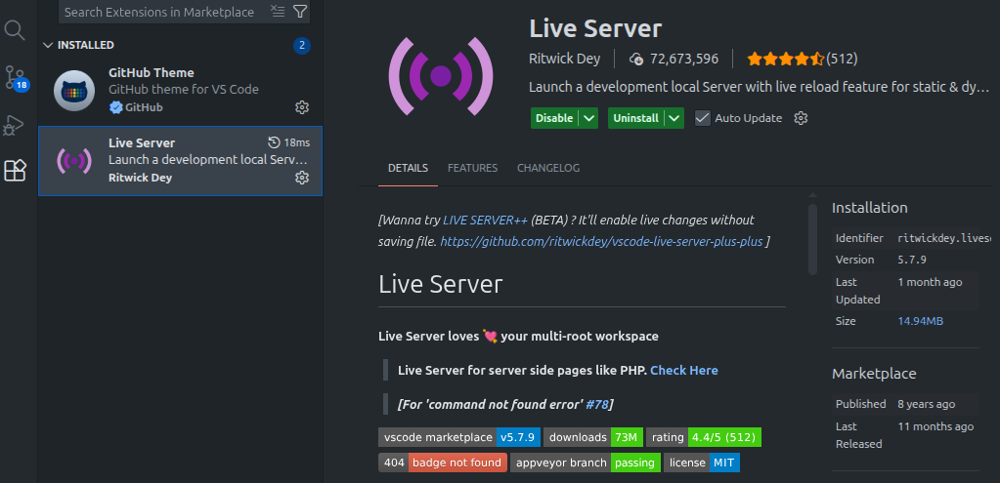

AWC | Clase 1: HTML
HTML
¿Cuál es el papel de HTML en AWC?
En el contexto de las aplicaciones web cliente y el DOM, HTML (HyperText Markup Language) es el lenguaje de marcado estándar que define la estructura y el contenido inicial de una página web. Se compone de una serie de etiquetas (como html, head, body, div, p, img, etc.) que describen jerárquicamente los elementos de la página, incluyendo textos, imágenes, enlaces, formularios y otros componentes. Cuando el navegador carga un documento HTML, lo analiza y construye a partir de él el árbol del DOM, convirtiendo cada etiqueta en un nodo de elemento, cada atributo en propiedades asociadas y el texto en nodos de texto.
HTML actúa como la base estática y semántica sobre la que construímos la representación dinámica que JavaScript puede manipular posteriormente para crear interfaces interactivas.
Manuales de referencia de la W3C
Creación del proyecto y configuraciones generales
Para trabajar utilizaremos vscode, pueden descargarlo directamente aquí Visual Studio Code

El proyecto para la materia debe estar dentro de una carpeta o directorio principal, que abriremos luego con vscode

Ejercicio 1
Deben crear una carpeta (directorio) en su sistema local (Windows, Mac, Linux) que contendrá la estructura básica para nuestro proyecto.
- Carpeta con nombre sin espacios, ni caracteres especiales
- Dentro un archivo index.html
- También una carpeta /css
- Otra para nuestras imágenes /img
- Una para guardar nuestros archivos javascript /js
- index.html debe tener, como mínimo, un body, header, main y footer
Configuraciones adicionales
- Instalar la extensión LiveServer en vscode
- Para el ajuste de línea automático, configurar el word wrap dentro del menú de configuración de vscode


Ejercicio 2: Catálogo
Deben elegir una temática para armar un catálogo. El catálogo de cada uno de uds. tendrá un nombre descriptivo y una introducción.
En el index.html deben crear 2 secciones, la primera es una bienvenida al catálogo y la segunda, una breve descripción introductoria.
Por ejemplo, si el catálogo es sobre cine tienen que describir la temática brevemente.
Deben también confeccionar un archivo README.md en el directorio raíz de su proyecto, el cual servirá para documentar su trabajo. Debe tener un título con el nombre y apellido de uds. el nombre de la materia y el número de comisión.